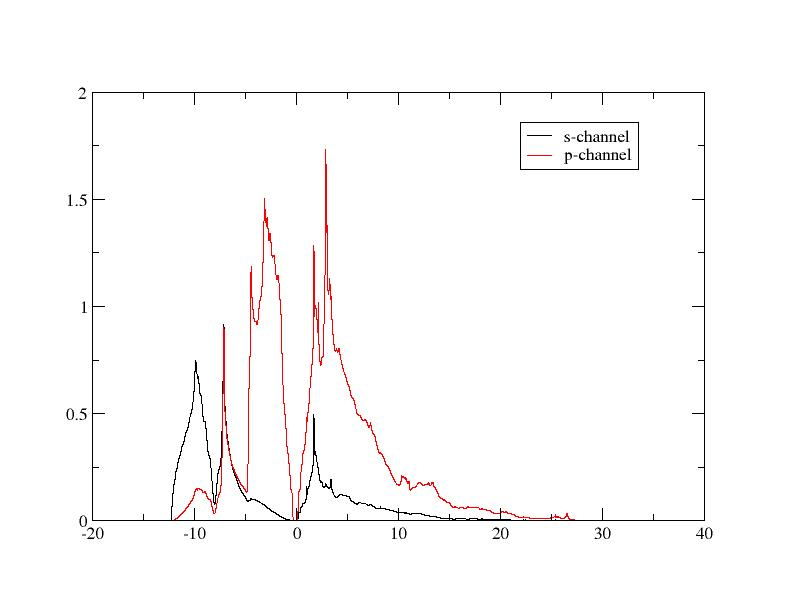

投影态密度
在本教程中，我们将使用 Optados 计算晶态硅中两个原子的电子态密度，并将其投影到线性组合原子轨道（LCAO）基组上。如果已经了解过相关内容可能会更有帮助。 上一个教程关于计算态密度（DoS）.
我们将使用 cell 文件
Si.cell
%BLOCK LATTICE_CART
2.73 2.73 0.00
2.73 0.00 2.73
0.00 2.73 2.73
%ENDBLOCK LATTICE_CART
%BLOCK POSITIONS_FRAC
Si 0.0 0.0 0.0
Si 0.25 0.25 0.25
%ENDBLOCK POSITIONS_FRAC
SYMMETRY_GENERATE
KPOINTS_MP_GRID 10 10 10
SPECTRAL_KPOINTS_MP_GRID 12 12 12
以及 param 文件
Si.param
TASK : SPECTRAL
%BLOCK devel_code
spectral: check_output: true :endspectral
%ENDBLOCK devel_code
SPECTRAL_TASK : DOS
PDOS_CALCULATE_WEIGHTS : TRUE
CUT_OFF_ENERGY : 200
IPRINT : 1
运行 CASTEP。然后，使用 Optados 输入文件运行 Optados。
Si.do.i
TASK : pdos
PDOS : angular
EFERMI : optados
DOS_SPACING : 0.1
BROADENING : adaptive # Default
ADAPTIVE_SMEARING : 0.4 # Default
FIXED_SMEARING : 0.3 # Default
SET_EFERMI_ZERO : true # Default
DOS_PER_VOLUME : false # Default
NUMERICAL_INTDOS : false # Default
FINITE_BIN_CORRECTION : true # Default
注意这一行 TASK : pdos — 这使得我们可以计算PDoS。我们选择将DOS分解为角动量通道，使用该线 PDOS : angular，且如同在 上一个例子，我们选择使用计算出的态密度来重新计算费米能级，而不是采用 Castep 建议的费米能级。
输出可以在 Si2.pdos.dat - 包含以下标题以告诉我们每一列代表什么。
################################################################
#
# O p t a D O S o u t p u t f i l e
#
# Generated on 13 Feb 2012 at 10:15:10
################################################################
#+-------------------------------------------------------------+
#| Partial Density of States -- Projectors |
#+-------------------------------------------------------------+
#| Projector: 1 contains: |
#| Atom AngM Channel |
#| Si 1 s |
#| Si 2 s |
#+-------------------------------------------------------------+
#| Projector: 2 contains: |
#| Atom AngM Channel |
#| Si 1 p |
#| Si 2 p |
#+-------------------------------------------------------------+
#| Projector: 3 contains: |
#| Atom AngM Channel |
#| Si 1 d |
#| Si 2 d |
#+-------------------------------------------------------------+
#| Projector: 4 contains: |
#| Atom AngM Channel |
#| Si 1 f |
#| Si 2 f |
#+-------------------------------------------------------------+
这表明下面描述了四个投影器——每个对应实际数据中的一个列。第1个st 包含两个硅原子的s通道，的2并 p型通道等。这些值对应于两个硅原子值之和。
你可以通过修改该行来更改你将获得的投影器。 PDOS : ANGULAR。将值更改为 SPECIES_ANG 只会给你前两个投影器。 SPECIES 将得到所有轨道和原子的总和。 SITES 将给出硅原子1所有轨道的总投影，以及原子2的投影（注意它们是相同的）。你也可以制作自定义投影——请写出元素、序号和轨道，用括号括起，若需要多个投影，则用列分隔相邻的投影。例如， Si1(s):Si2(p) 将给出硅原子1的s轨道的PDoS的一列，以及硅原子2的p轨道的一列。
说明
使用自定义投影不会将数据保存在 Si.pdos.dat，但会保存一个基于所选投影函数命名的文件——在上述例子中，它将保存在 Si.pdos.proj-0001-0002.dat.
输出可以通过使用xmgrace进行绘图。 dat 文件。要绘制多组数据，最简单的方法是使用批处理文件——这是s和p通道的数据图：我们可以运行 xmgrace -batch pdos_plot.bat 关于批处理文件
pdos_plot.bat
以获得以下输出：
